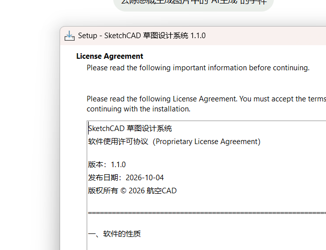
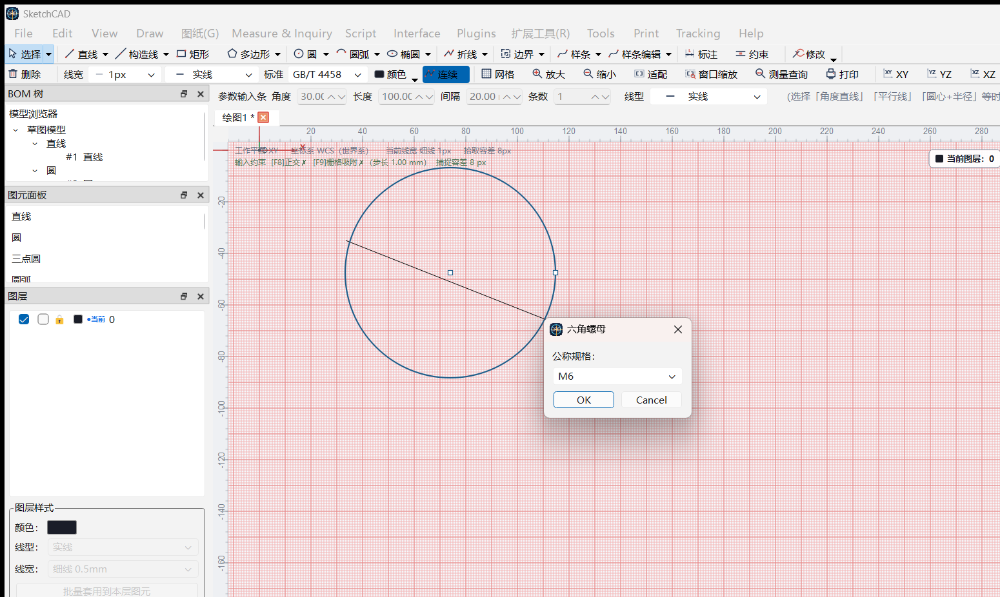
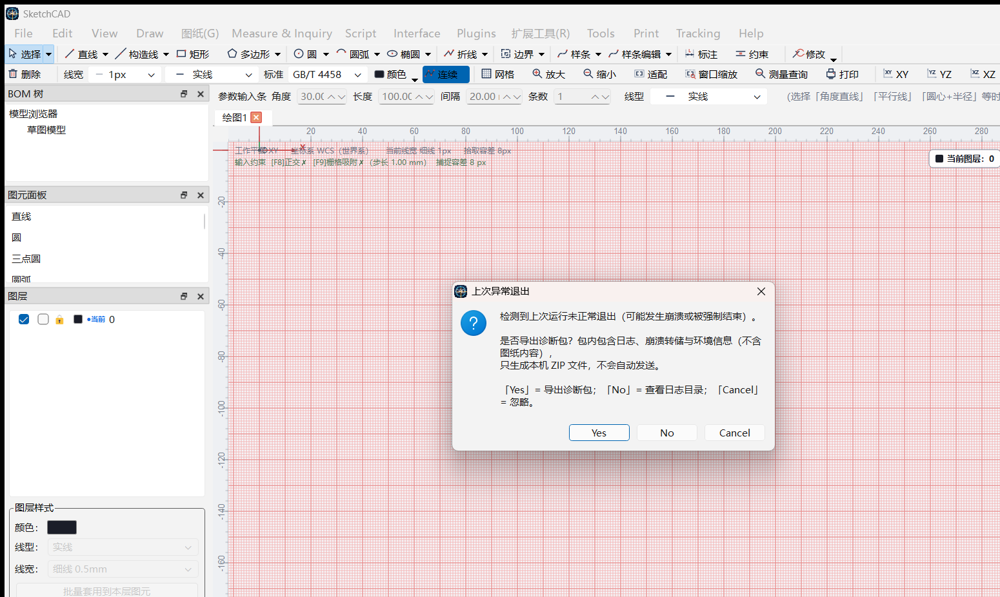
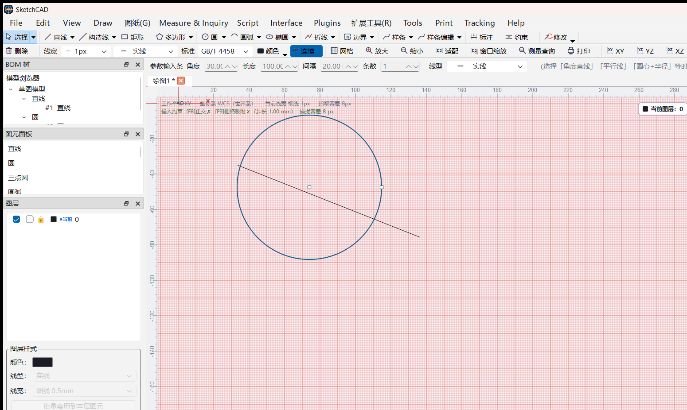
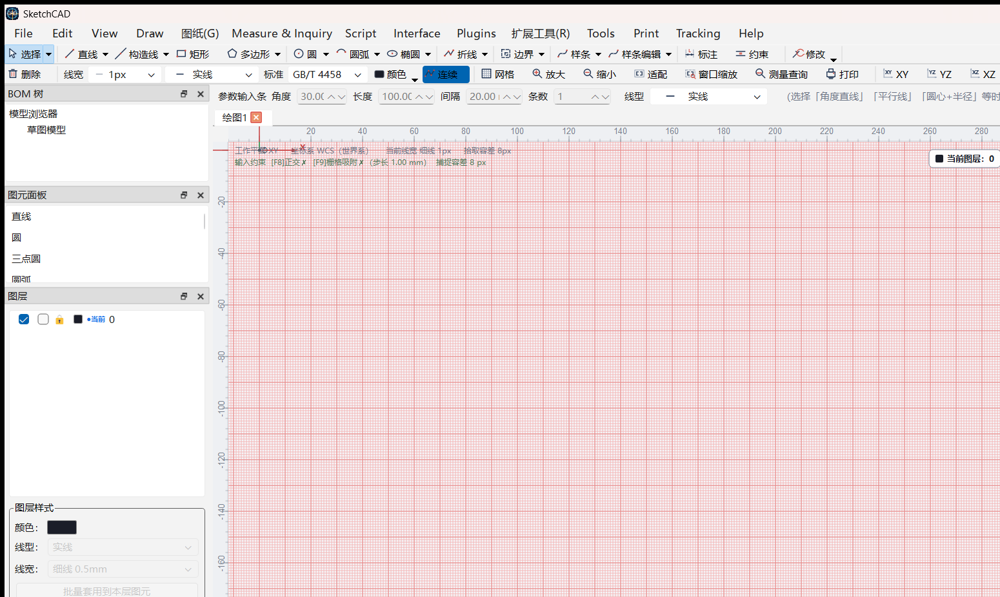
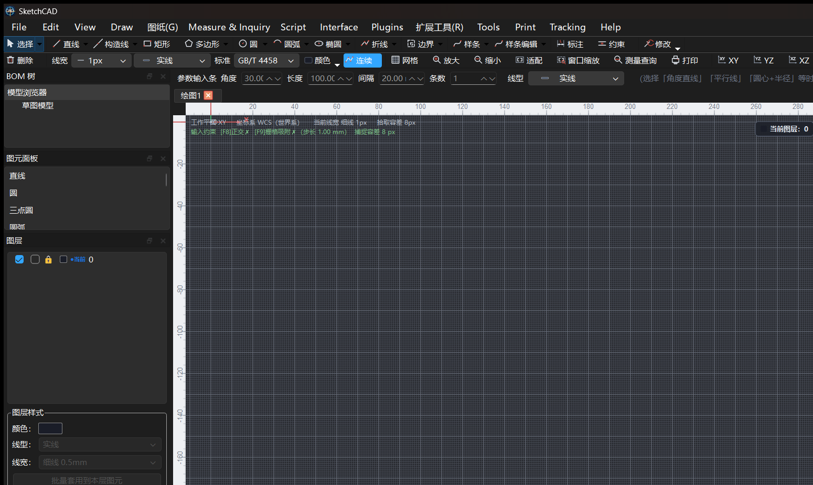

本手册面向初次接触 SketchCAD 的工程师与制图人员，以通俗语言与大量图示， 帮助您在 30 分钟内完成「安装 → 绘图 → 标注 → 填写标题栏 → 批量出图」的完整闭环。
SketchCAD 是一款基于 C++17 / Qt 6 开发的二维计算机辅助设计（2D CAD）软件， 专注于工程制图的核心工作流：草图绘制、几何辅助、尺寸与公差标注、参数化标准件图库、 标题栏与批量出图、明暗主题等。它既能满足日常零件图、装配图的绘制， 也内置了对 DXF（R12–R2018） 与 DWG 格式的导入导出支持，便于与 AutoCAD、中望 CAD 等主流软件交换图纸。
| 用户角色 | 典型场景 | 常用模块 |
|---|---|---|
| 机械 / 结构工程师 | 零件图、装配图、公差标注 | 绘图、约束、GD&T、国标图库 |
| 制图员 / 技术员 | 套用图框、填标题栏、批量签名出图 | 标题栏、批量三件套、打印 |
| 教育工作者 / 学生 | 教学演示、作业提交 | 全部基础功能、DXF 交换 |
| 二次开发者 | 自动化出图、脚本批处理 | 命令系统、COM/SDK、参数化 |
| 项目 | 最低要求 | 推荐配置 |
|---|---|---|
| 操作系统 | Windows 10 64 位 | Windows 11 64 位 |
| CPU | 双核 2.0 GHz | 四核及以上 |
| 内存 | 4 GB | 8 GB 及以上 |
| 磁盘 | 500 MB 可用空间 | 1 GB 及以上 |
| 显示 | 1366×768 | 1920×1080，支持高 DPI |
| 依赖 | Qt 6 运行库随安装包自带；DWG 导入需额外「DWG 转换组件」（见 4.3 节） | |
SketchCAD-1.1.0-Setup.exe。
SketchCAD-1.1.0-Setup.exe 后的安装程序许可协议页，顶部显示「Setup - SketchCAD 草图设计系统 1.1.0」。从开始菜单或桌面快捷方式启动，会先显示启动封面（SketchCAD.png），随后进入主界面。建议首次启动时允许程序写入自动保存目录。
通过「Windows 设置 → 应用」或开始菜单中的「卸载 SketchCAD」入口移除；个人配置（如图层习惯、别名）默认保留，便于重装后继续使用。
下图为 SketchCAD 主窗口的分区示意（标注各区域名称，实际界面以软件为准）。
本章逐项拆解 SketchCAD 的核心能力，帮助您理解「能做什么、为什么需要它」。
SketchCAD 支持丰富的二维图元，覆盖绝大多数工程制图需求：
| 类别 | 图元 | 说明 |
|---|---|---|
| 基础几何 | 直线、圆、圆弧、椭圆、多段线、样条曲线 | 构成图形的基本元素 |
| 填充 / 区域 | 图案填充（Hatch）、边界（Boundary） | 剖面线、区域填充，支持联动更新 |
| 文字 | 单行文字、多行文字（MText） | 技术要求、注释；多标准排版引擎 |
| 标注 | 线性 / 对齐 / 半径 / 直径 / 角度 / 坐标标注 | 驱动尺寸约束，随图形更新 |
| 公差 | GD&T 几何公差、形位公差框（Fcf） | 多标准（如 GB、ISO）公差标注 |
| 引线与块 | 多重引线（MLeader）、块（Block） | 零件标号、标准符号复用 |
内置草图约束求解器（SKT 系列），可对图形施加几何关系（水平、垂直、平行、相等、同心、相切等）与尺寸驱动， 求解器自动调整几何以满足全部约束。适合参数化草图与零件轮廓设计。
提供线性、对齐、半径、直径、角度、坐标等多种尺寸标注，并支持 GD&T 几何公差（形位公差框格 Fcf）。 标注与图形关联，移动几何时尺寸自动跟随；公差标注兼容多套标准，便于按企业规范出图。
内置参数化国家标准图库（PartLibrary），可按参数一键生成标准件图形。以 GB/T 5782 六角头螺栓为例， 软件可自动绘制包含倒角、螺纹根部线、端面内切圆与完整尺寸标注的标注图，无需手工拼装。

标题栏采用表格化设计，每个栏目由「灰色标签 + 黑色字段」两个独立图元组成，标签带与值区上下分离， 填写后两者互不遮挡（详见 FAQ 4.2）。此外支持：
面向多图框工程图，提供批量三件套（BatchPlotEngine）：
| 环节 | 作用 |
|---|---|
| ① 拆分 | 将一个总图按图框边界拆分为多个子图。 |
| ② 排图 | 按幅面把多个子图自动排版到打印页面。 |
| ③ 签名 | 批量写入标题栏签名 / 审核等信息（batchSign）。 |
tools/dwg，按 GPLv3 随附）。若未安装组件，打开 AC1012 及以上版本 DWG 时软件会给出明确提示（含版本串与帮助链接），并可将文件另存为自研 R12 后回落处理。系统 / 亮色 / 暗色。绘图区配色、网格、坐标轴、图标墨色均随主题实时切换；图标采用引擎化绘制，确保暗底浅墨、亮底深墨均清晰可读。acad.pgp 别名（如 L→直线、C→圆）；可通过 aliasreload 重载自定义别名表。help 列出全部命令总表；help <命令名> 查看该命令的详细说明、参数与示例；命令行支持 Tab 补全。SketchCAD 内置 AutoSave（自动保存） 与 mini-dump（崩溃转储） 机制： 编辑过程中按间隔自动落盘，即使程序异常退出，下次启动也能找回最近草稿，避免稿件丢失。

保存 一次；自动保存仅作为兜底保护，不替代正式存盘。SketchCAD 支持将图纸与模板存入数据库（默认 SQLite 文件型、零配置；亦可切换 MySQL 服务器型），便于集中管理与复用。程序启动即静默连接，未连接时自动降级为纯文件存储，不影响任何绘图操作。
drawings 图纸表、templates 模板表）；表已存在则跳过，不会清空已有数据。数据库配置有两个等价入口，任选其一：菜单 数据库(&D) › 数据库配置...（始终可点），或配置中心 工具 › 选项... › 数据库（左侧分类树新增「数据库」页，可直接查看并编辑连接信息）。配置结果写入本地配置文件 ~/SketchCAD/db_config.json，程序下次启动即按此文件作为连接输入。两种数据库类型：
| 类型 | 配置项 | 说明 |
|---|---|---|
| SQLite（文件型） | 数据库文件 | 选择 .db / .sqlite 文件；留空则默认 ~/SketchCAD/sketchcad_drawings.db，零配置开箱即用。 |
| MySQL（服务器型） | 主机 / 端口 / 数据库名 / 用户名 / 密码 | 连接远程或本地 MySQL 实例；端口默认 3306。 |
db_config.json → 启动按配置静默连接 → 自动建表 → 状态栏回显。drawings 表（完整 JSON 存档，与文件格式同源）。模板用于「相同形状、不同幅面」的图纸复用：
缩放系数 = 目标尺寸 ÷ 参考尺寸 围绕内容中心等比缩放几何。本章用「任务导向」的方式，带您走通最常见的工作流。括号内为等价命令名（可在命令行输入）。
L（直线）或点工具栏「直线」。C，指定圆心与半径。.sketchcad 工程文件。
PartLibrary.generate。batchSign 批量写标题栏）。.dwg 或 .dxf。files/dwgToolsOverride）。系统 / 亮色 / 暗色。

drawings 表。.sketchcad 文件并存，可互相兜底；未连接时所有数据库菜单项自动禁用，但仍可用文件方式存图。原因：DWG 导入依赖独立的转换组件（GPLv3，随安装包提供于 tools/dwg）。
解决：① 确认安装时该组件已安装；② 在「选项 → 文件 → DWG 转换组件路径」中指定目录；③ 或改用 DXF 导入（DXF 无需该组件）。提示框会显示具体版本串（如 AC1018）与帮助链接。
现象：早期版本填写后「图纸名称 / 图号」等标签被字段值遮挡。
解决：v1.1.0 已采用「标签带 + 值区」两区分离布局，录入值位于标签下方、互不重叠。请升级到 v1.1.0 或更新版本；若仍异常，检查是否使用了自定义旧模板，建议套用新版标准标题栏。
原因：旧版图标在启动期烘焙颜色，暗底下深墨不可见。
解决：v1.1.0 图标改为引擎化绘制，墨色随主题实时解析（暗底浅墨、亮底深墨）；工具栏文字在亮色为纯黑、暗色为白字。升级即可。
解决：软件导入时按内容自动判定 UTF-8 / GBK 解码。若个别源文件异常，请确认其原始编码；必要时在源 CAD 中另存为 UTF-8 编码的 DXF 后再导入。
不会。AutoSave 会定期落盘，崩溃后下次启动可恢复最近草稿。仍建议重要节点手动 Ctrl+S 保存。
软件内置空间索引加速显示与拾取。若仍卡顿，建议：① 将总图用「拆分」分为多个子图分批处理；② 关闭暂时不需要的图层；③ 适当降低视图缩放级别。
输入 help 查看全部命令总表；用 help <命令名> 看详情；别名未生效时执行 aliasreload 重载。也可用 Ctrl+Shift+P 命令面板搜索。
确认导出版本选择正确：现代 CAD 建议选 R2004–R2018；目标为老旧设备再选 R12。若含多重引线（MLeader），老版本 DXF 可能不支持，可改用普通引线或选 R2000+。
路径：~/SketchCAD/db_config.json（~ 为用户主目录）。
修改：无需手动编辑，直接通过「数据库(&D) → 数据库配置…」对话框修改并保存，软件会原子写回该文件。
缺失 / 损坏：文件不存在或被损坏时，程序回落默认 SQLite（~/SketchCAD/sketchcad_drawings.db），不影响启动。
未连接时菜单：仅「绘图记录 / 保存到数据库 / 另存模板」三项禁用，「数据库配置」始终可点，可随时修正连接。
欢迎通过以下渠道获取帮助、反馈问题与参与改进：
| 渠道 | 地址 / 方式 | 适用场景 |
|---|---|---|
| GitHub 仓库 | https://github.com/shendu222/SketchCAD | 源码、发布、Issue 反馈 |
| Gitee 仓库 | https://gitee.com/markhenrychen/sketch-cad | 国内镜像、Issue 反馈 |
| 问题反馈（Issue） | 在仓库的 Issues 区提交 | Bug 报告、功能建议（请附版本号与复现步骤） |
| 文档与说明 | 仓库 docs/ 目录 | 设计分析、SDK 指南、API 文档 |
| 发布与更新 | GitHub / Gitee 的 Releases 页 | 下载安装包、查看版本说明 |
SketchCAD 用户手册 · v1.1.0 · 本手册内容基于公开功能整理，界面与命令以实际软件版本为准。
© 2026 SketchCAD 项目 | GitHub shendu222/SketchCAD · Gitee markhenrychen/sketch-cad